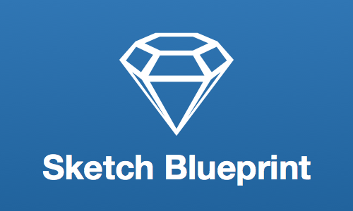
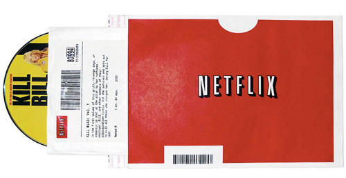
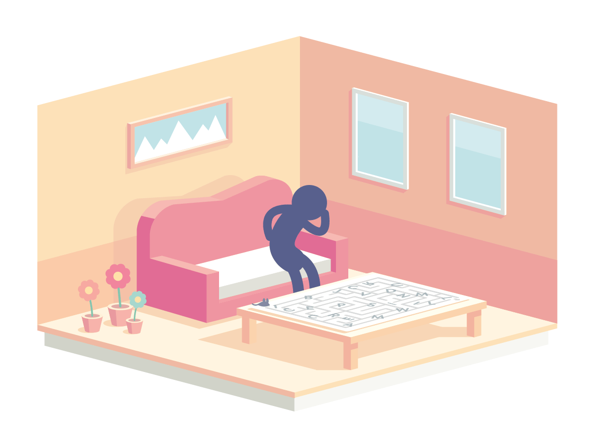
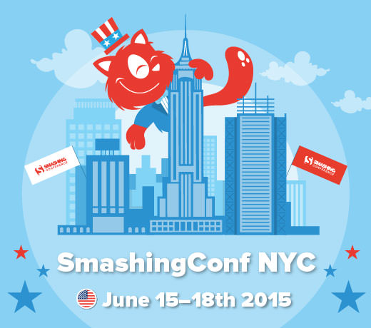
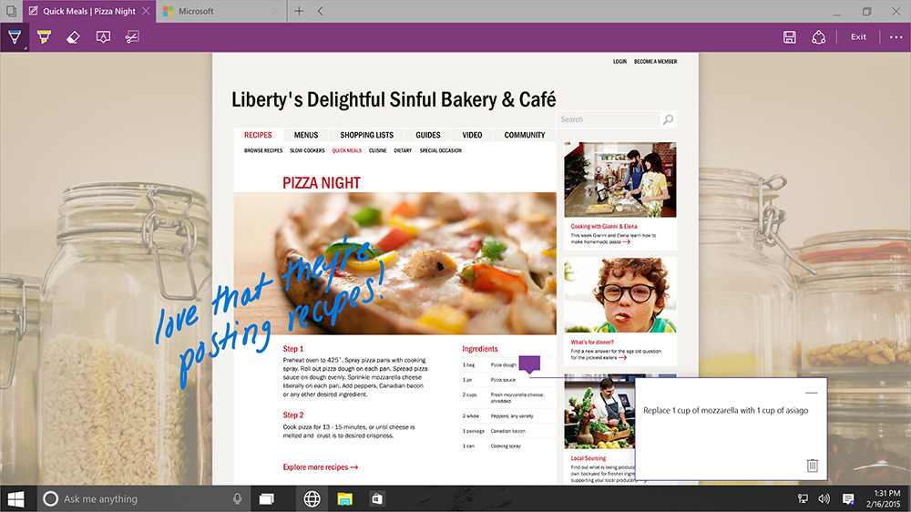
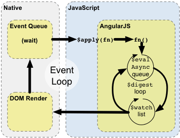

Prototyping iOS And Android Apps With Sketch (With A Freebie!)
By Joshua Mauldin
- January 30th, 2015
- 6 comments
After the untimely (and still kind of sad) demise of Fireworks, I found myself looking for other ways to design apps and websites. I also had the desire to produce something more interactive for when I talk about my work with stakeholders. It turned out that Sketch, when paired with some other neat tools, would be a big part of this workflow.
In this article, I’ll talk you through why you should prototype and how you can do it with Sketch and prototyping tools such as Flinto and InVision. You’ll also get a nicely documented freebie Sketch file to help you.
Five Characteristics Of An Innovation
By Victor Yocco
- January 29th, 2015
- 3 comments
The “diffusion of innovations” theory of communications expert and rural sociologist Everett Rogers attempts to identify and explain the factors that lead to people and groups adopting innovations (new ideas and technologies). Design teams that account for both usability and how people adopt innovation stand a much greater chance of having users accept and use their products..
The diffusion of innovations is a complex process; design teams can use their knowledge of the theory to create a road map for how they will address critical factors in the design and marketing of their product.
The New Smashing Mystery Riddle: Have You Figured It Out Yet?
By Vitaly Friedman
- January 27th, 2015
- Comments off
You didn't really think we'd wrap up our endless, mischievous mystery riddles just like that, did you? Well, the Mystery continues! To celebrate the launch of the SmashingConf NYC 2015, we’ve prepared a new mystery riddle, and this one will be an exercise in patience and stubborness. No, it's not going to be an easy one this time either, but the reward is definitely worth the effort.
How does it work? Well, you know how it works. Below you’ll find the first of a few animated GIFs that contain a hidden Twitter hashtag. Your job is to discover those hashtags as fast as possible. If your guess for a hashtag is right, you’ll find a tweet leading you to the next level. Once you’ve reached the last level, just tweet out all the hints in one single tweet to @smashingmag. You're looking for 5 hashtags in total, a hashtag per level. Not that difficult, right?
So let's get to work. Are you ready? Action!
“When Great Just Isn’t Good Enough” Smashing Conference NYC 2015
By Vitaly Friedman
- January 27th, 2015
- 1 Comment
SmashingConf NYC 2015 will challenge you to rethink how you design and build websites today — and how to touch someone's heart with design. 1 track, 2 conference days, 5 workshops, 16 excellent speakers and just 400 available tickets. With the main focus on practical takeaways from real-life projects, you might never be the same again. To the tickets.
You’ve been around for quite some time, haven’t you? You know your way around front-end, or UX methodologies, or mobile patterns, or even the obscure dark matter of responsive web design. But you might not feel just right with your workflow, with the techniques and strategies you use, or perhaps with the amount of time required to get things done. Your techniques are pretty good, great even, but they just aren’t good enough.
Inside Microsoft’s New Rendering Engine For The “Project Spartan”
By Jacob Rossi
- January 26th, 2015
- 99 Comments
Last week, Microsoft made its biggest announcement for the web since it first introduced Internet Explorer in 1995: a new browser, codenamed “Project Spartan.” So, what does this mean for us as designers and developers? What rendering engine will Spartan be using, and how will it affect our work? We spoke with Jacob Rossi, the senior engineer at Microsoft's web platform team, about the new browser, the rendering engine behind it, and whether it's going to replace Internet Explorer in the long run. This article, written by Jacob, is the result of our conversations, with a few insights that you may find quite useful. – Ed.
Spartan is a project that has been in the making for some time now and over the next few months we’ll continue to learn more about the new browser, what it has to offer users, and what its platform will look like. It will be a matter of few months until users and developers alike will be able to try Spartan for themselves, but we can share some of the interesting bits already today. This article will cover the inside story of the rendering engine powering Spartan, how it came to be, and how 20 years of the Internet Explorer platform (Trident) has helped inform how our team designed it.
How And Why To Make Side Projects Work At A Digital Agency
By Danny Bluestone
- January 23rd, 2015
- 8 Comments
It’s no secret that the digital industry is booming. From exciting startups to global brands, companies are reaching out to digital agencies, responding to the new possibilities available. However, the industry is fast becoming overcrowded, heaving with agencies offering similar services — on the surface, at least.
Producing creative, fresh projects is the key to standing out. Unique side projects are the best place to innovate, but balancing commercially and creatively lucrative work is tricky. So, this article looks at how to make side projects work and why they’re worthwhile, drawing on lessons learned from our development of the UX Companion app.
AngularJS’ Internals In Depth
By Nicolas Bevacqua
- January 22nd, 2015
- 17 Comments
AngularJS presents a remarkable number of interesting design choices in its code base. Two particularly interesting cases are the way in which scopes work and how directives behave.
The first thing anyone is taught when approaching AngularJS for the first time is that directives are meant to interact with the DOM, or whatever manipulates the DOM for you, such as jQuery (get over jQuery already!). What immediately becomes (and remains) confusing for most, though, is the interaction between scopes, directives and controllers.

 Smashing Newsletter
Smashing Newsletter

 Smashing Job Board
Smashing Job Board